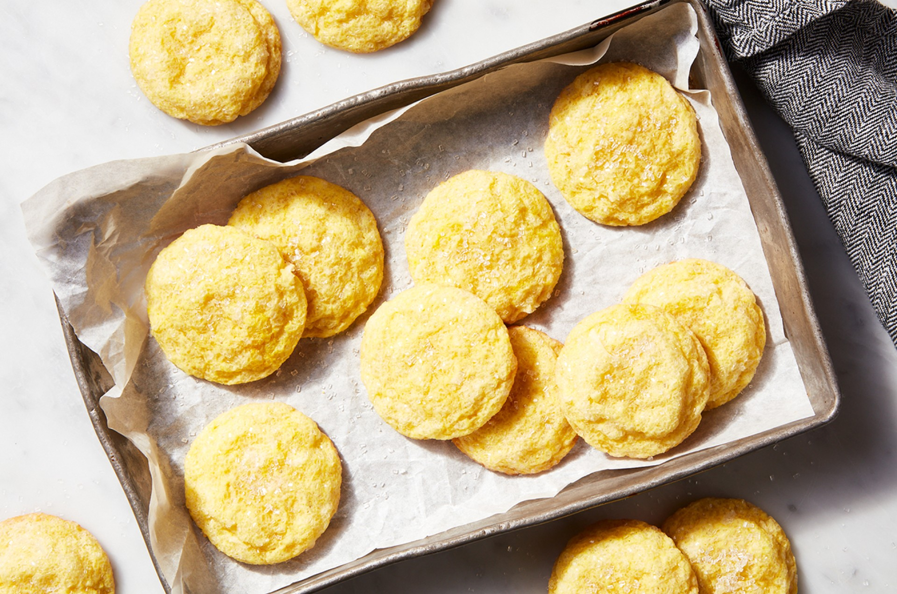

Lemon Coconut Cookies

If you're a citrus fan, or an enthusiastic follower of the tart, refreshing flavor of lemon, these citrusy coconut cookies are for you. Our thanks to Claire Introini, whose original Very Lemon Cookies recipe inspired this one.
Ingredients
- 8 tablespoons (113g) unsalted butter, softened
- 3/4 cup (149g) granulated sugar
- 1 large egg
- 1/2 teaspoon King Arthur Pure Vanilla Extract
- 1 teaspoon baking powder
- 1/4 teaspoon table salt
- 1/2 teaspoon lemon oil
- 1 1/2 tablespoons (14g) King Arthur Lemon Juice Powder
- 1 1/2 cups (180g) King Arthur Unbleached All-Purpose Flour
- 1 cup (85g) shredded coconut, sweetened
- 3 tablespoons (35g) coarse sparkling sugar, for topping
Instructions
- Preheat the oven to 350°F. Lightly grease (or line with parchment) two baking sheets.
- To prepare the dough: In a medium-sized bowl, combine the butter and sugar.
- Add the egg, vanilla, baking powder, salt, lemon oil, and lemon juice powder, beating until well blended.
- Add the flour and coconut, stirring until combined.
- To shape the cookies: Place the sparkling white sugar in a small bowl.
- Drop the dough by tablespoonfuls into the bowl, one at a time, shaking the bowl to coat with sugar.
- Gently roll cookies into smooth balls with your hands, then transfer to the prepared baking sheets.
- To bake the cookies: Bake the cookies for 9 to 10 minutes, for soft cookies.
- For crunchier coconut cookies, bake for 12 minutes, until they're barely beginning to brown around the edges.
- Remove the cookies from the oven, and after a few minutes transfer them to a rack to cool.
- Store leftover Lemon-Coconut Cookies in a closed container, for 5 days, or freeze for up to a month.
Recipe Link: https://www.kingarthurbaking.com/recipes/lemon-coconut-cookies-recipe